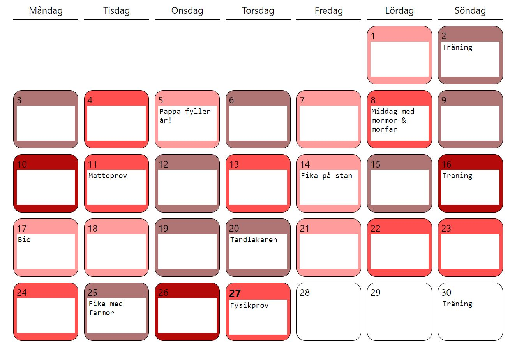

Välkommen till Bullet Journal Online!
Bullet journaling är en metod som används för att organisera sin vardag. Med hjälp av olika tabeller och symboler kan man fylla i hur man mått under dagen och vad man har gjort. Oftast görs bullet journals för hand i böcker, och det är väldigt häftigt, men har du alltid tid att rita din egen kalender? Orkar du alltid? Blir det verkligen alltid som du tänkt dig? Vissa dagar orkar man inte hitta på något kreativt, och i en allt mer stressig vardag blir det svårare att hinna med.
Därför finns Bullet Journal Online. Genom det här webbverktyget blir det enkelt att fylla i din kalender och hålla reda på hur du mått och vad du gjort. Allt finns dessutom tillgängligt i din mobil eller dator, vilket gör att du inte behöver bekymra dig över en bok som kan försvinna.
Jag som driver sidan är en 17-årig tjej som hållit på med bullet journaling i ungefär tre år. Genom Bullet Journal Online vill jag hjälpa andra människor att strukturera upp och minnas sin vardag, och dessutom göra bullet journaling mer lättillgängligt.